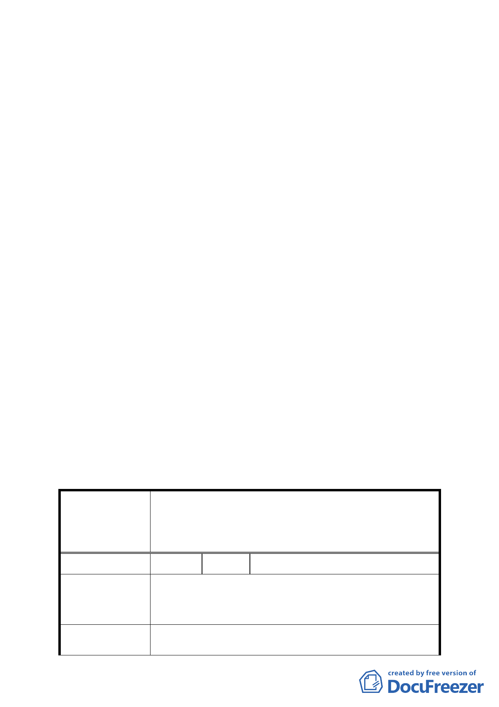

配合修訂主要計畫案內『基隆河（中山橋至成美橋）附
近地區土地使用分區與都市設計管制要點』』案規定辦
理」以免誤解
2. 所送修正後計畫書第 9 頁（三）停車空間，有關停車空
間設置標準第（三）之 1 點規定，文字請修正為「依現
行『臺北市土地使用分區管制規則』規定辦理」。
3. 修正後計畫書第 11 頁二、其他，文字請刪除「（如附件
一）」，並增列「實際容積獎勵額度，由臺北市都市設
計及土地使用開發許可審議委員會依本案所規劃之開放
空間，審酌其必要性、開放性及公益性，就實際面積再
核予容積獎勵額度」。
4. 所送修正後計畫書第 11 頁柒、都市設計準則，請比照已
公告實施之「2010 年臺北好好看」都市計畫變更案件，
增列「建築基地應依建築技術規則綠建築專章規定檢
討」。
5. 修正後計畫書第 13 頁「拾、其他第三點、本計畫未規定
事項悉依相關法令及原計畫規定辦理」，請修正為「三、
本計畫未規定事項悉依相關法令及 92.1.7 修訂『臺北市
基隆河（中山橋至成美橋段）附近地區細部計畫暨配合
修訂主要計畫案內『基隆河（中山橋至成美橋）附近地
區土地使用分區與都市設計管制要點』』案規定辦理」。
二、 公民或團體陳情意見審決如後附綜理表。
臺北市都市計畫委員會公民或團體所提意見綜理表
案
編
修訂臺北市基隆河（中山橋至成美橋段）附近地區細部
名 計畫商業區（供商業購物中心使用）街廓編號 A2 基地
（中山區金泰段 105-1 地號）土地使用分區管制規定與
都市設計管制要點計畫案
號 1 陳情人 陳議員玉梅
目前大彎北段商業區之建物使用現況，大多違規作為住
陳 情 理 由 宅使用。大彎北段之商業區、娛樂區已有部分土地依現
行之法令完成開發建築。
建 議 辦 法 為避免都市計畫變更公告實施後，造成未來有更大量之
違規使用情事發生，故建議地上 1 至 3 層樓維持商業使
- 41 -